About this page...
This page has instructions for installing Hyperic components using the Windows MSI installer. As noted below in About the Hyperic MSI Installer, the MSI installer is most suitable for non-production environments. For information about other installers, see Select and Download an Installer.
instructions on installing Hyperic for production use, see Hyperic Installation and Startup Process.
About the Hyperic MSI Installer
You can use the Hyperic MSI Installer to install the Hyperic Server, the Hyperic Agent, or both. Both server and agent are installed as Windows services.
Note that the MSI installer installs Hyperic Server with a built-in PostgreSQL database. You cannot install and configure the Hyperic Server to use an external database with the MSI installer. For this reason, the MSI installer is most useful for quickly setting up a Hyperic evaluation environment.
The Hyperic MSI installer provides an InstallShield wizard GUI that has two modes:
- Complete — When you select the "Complete" installation option, the installation location is the only user input the wizard allows — it will install both the server and the agent and use default values for all other installation options. See MSI Silent Mode Properties to see the default values for server and agent configuration settings.
- Custom — The wizard's "Custom" mode allows you more control over the installation. You can install either the server or the agent, or both. In addition, you can explicitly specify these options:
- Address of SMTP server the Hyperic Server will use to send email
- Username and password for the initial admin user.
- The encryption key used to encrypt the database user password.
- The agent address and listen port.
You can also run the the MSI installer in silent mode, in which case you supply installation properties — defined in MSI Silent Mode Properties — on the command line. The default values are used for properties that are not defined at the command line.
| Requirements for MSI Installer Note that:
|
Interactive MSI Installation
Interactive Complete Install
- Double-click the Hyperic MSI installer file.
- On the InstallShield Wizard window, press Next to start the installation.
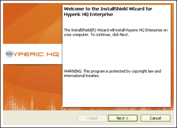 - On the License Agreement window, select the "I accept..." option and click Next.
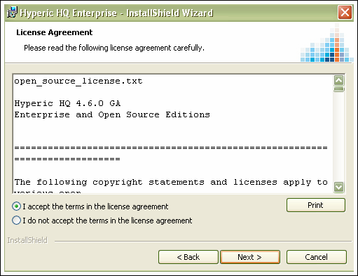 - On the Destination Folder window, click Next to install to the default installation directory, or click Change to select a different directory.
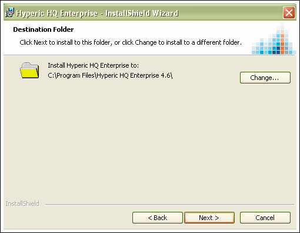 - On the Setup Type window, select the Complete option and click Next.
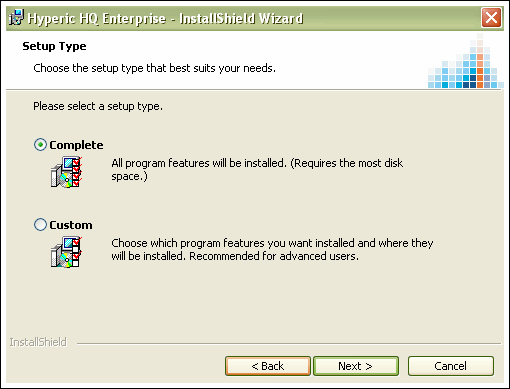 - On the Ready to Install window:
- Uncheck the box if you do not want the services for the Hyperic Server and Hyperic Agent to be started when the installation is complete.
- Click Next to start the installation.
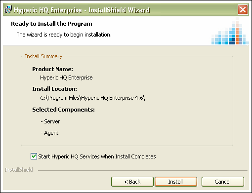
- On the Installing Hyperic Enterprise window, the "Status" bar shows the progress of the installation.
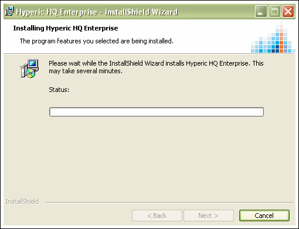 - Click Next when the installation is complete.
Interactive Custom Install
The custom installation procedure allows you to both the Hyperic Server and the Hyperic Agent, or just one or the other.
To run the custom install procedure:
- Perform steps 1 through 4 of the Interactive Complete Install above.
- On the Setup Type window, Select the Custom option and click Next.
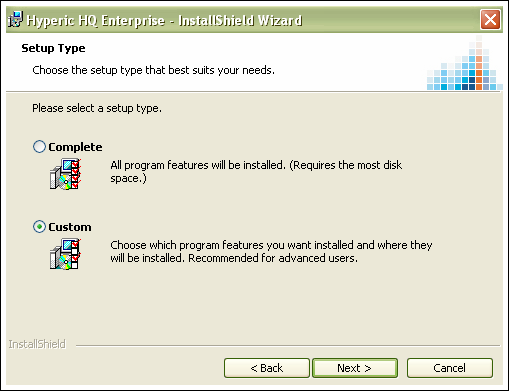 - On the Custom Setup window you can:
- Click Next to install both server and agent to the installation directory shown, or
- Click Change to select a different installation directory and then click Next, or,
- Expand the Hyperic Enterprise tree control so you can deselect the Server or Agent component if you do not wish to install it, and then click Next.
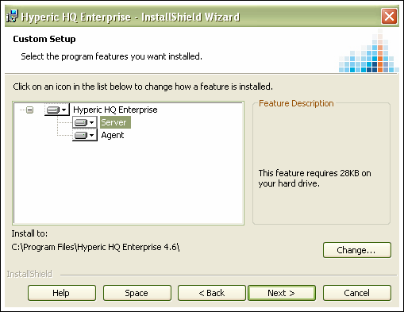
- On the HQ Web Configuration window, you can accept the default value, or enter a different value for:
- Address — The address upon which the Hyperic Server will listen for agent and web application requests. The default value is the IP address of the first network interface the installer found on the platform.
- HTTP Port — The port upon which the Hyperic Server will listen for plain text agent and web application requests. The default is port 7080.
- HTTPS Port — The port upon which the Hyperic Server will listen for SSL agent and web application requests. The default is port 7443.
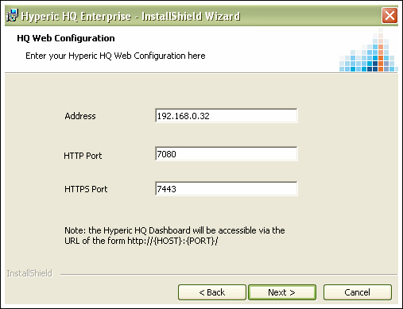
- On the Mail Server Configuration window, accept the defaults or change the values for:
- SMTP Host — The hostname of the SMTP server found on the platform.
- Mail Sender — The email address from which the server will send email notifications.
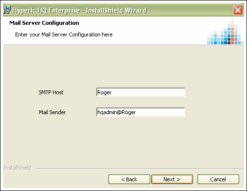
- On the Database Encryption Key window, enter a string of at least eight characters.
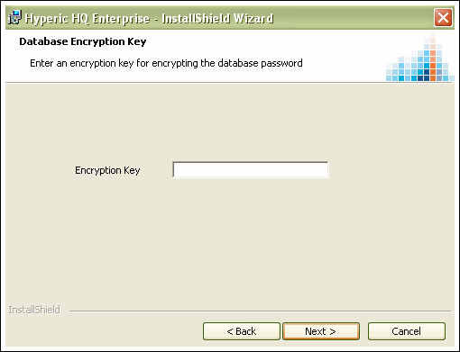 - On the Admin User Configuration window, accept the defaults or change the values, for:
- Admin Email
- Admin User
- Admin Password
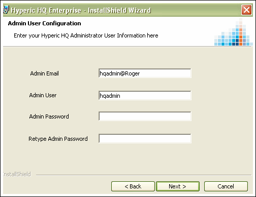
- On the HQ Agent Configuration window, accept the defaults or change the values for:
- Agent Address — This is the address the Hyperic Server will use to contact the agent.
- Agent Port — This is the port the Hyperic Server will use to contact the agent.
- Secure Agent to Server Connections — If you wish all communication between agent and server to be SSL.
- Agent Communicates with Server Unidirectionally — If you wish the agent to initiate all communication with the server.
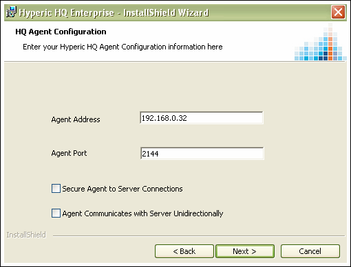
- On the Ready to Install the Program window:
- Deselect "Start Hyperic HQ Services when Install Completes" option if you do not want services for the Hyperic Server and Hyperic Agent to be started when the installation is complete.
- Click Install to install selected components.
Silent MSI Installation
You can run the Hyperic MSI installer in silent mode from the DOS prompt.
Command Line Syntax
| Opening Windows Command Shell On Windows, if you open your command shell from the Start menu, you must run as "Administrator", like this:
|
To install Hyperic:
%Comspec% /c msiexec /i "PathToInstaller" /qn PROPERTY1=VALUE1 PROPERTY2=VALUE2 ...
Where:
- /c — tells the shell to wait until the msiexec.exe command completes before proceeding. Without this switch, the shell will execute subsequent commands before the current command finishes.
- /i — instructs MSIEXEC to install the .MSI listed after the switch.
- PathToInstaller — is the full path to the MSI installer, for example C:\Program Files\hyperic-hq-installer-4.6.msi
- /qn — turns off prompts to the console.
- PROPERTY1=VALUE1 — is a installation property name=value pair, for example INSTALLDIR=C:\hyperic. Installation properties are defined below in MSI Silent Mode Properties
To uninstall:
%Comspec% /c msiexec /x "PathToInstaller" /qn
- /x — instructs MSIEXEC to uninstall the .MSI listed after the switch.
MSI Silent Mode Properties
Installation properties for installing Hyperic in MSI silent mode are described below.
Note that all properties and their values are case-sensitive.
Properties that begin with the strings SERVER and AGENT are server and agent properties, respectively.
| Silent Mode Property | Description | Default |
|---|---|---|
| INSTALLDIR | Directory where the Hyperic components will be installed. | C:\Program Files\Hyperic HQ 4.6 |
| ADDLOCAL | Use this property if you want to install only the Hyperic Server or the Hyperic Agent. Comma-separated list of components to be installed. Allowable case-sensitive values are Agent and Server. | If you do not specify ADDLOCAL, both agent and server will be installed. |
| SERVER_ADMIN_EMAIL | Hyperic Server Administrator's email address. | SERVER_ADMIN_USER@SERVER_MAIL_HOST |
| SERVER_ADMIN_USER | User name of the original admin user in Hyperic. | hqadmin |
| SERVER_ADMIN_PASSWORD | Password of the original admin user in Hyperic Server. | hqadmin |
| SERVER_DATABASE_USER | Defines the username the Hyperic Server will use when connecting to the Hyperic database.The value assigned will be saved in the server.database-user property in server.conf. | hqadmin |
| SERVER_DATABASE_PASSWORD | Password the Hyperic Server will use when connecting to the Hyperic database. The value assigned will be saved in the server.database-password property in the server.conf file. | hqadmin |
| DB_ENC_KEY_PW | The Database Encryption Key Password. This value will be used to encrypt the database password. Must be at least 8 characters long, there are no restrictions on the type of characters that may be entered. | |
| SERVER_MAIL_HOST | The IP address or hostname of the SMTP server that the Hyperic Server will use for sending alerts and other Hyperic-related emails. Most UNIX platforms have a local SMTP server. If you wish to use a non-local SMTP server, specify the address with this property. The value assigned will be saved in the server.mail.host property in server.conf file. | 127.0.0.1 |
| SERVER_MAIL_SENDER | The 'From' address in email notifications from the Hyperic Server. | SERVER_ADMIN_EMAIL |
| SERVER_POSTGRESQL_PORT | Hyperic Server's embedded database listen port. | 9432 |
| SERVER_WEBAPP_HOST | Specifies the Hyperic Server's listen address for Hyperic Portal communications. By default, this property and AGENT_SERVER_ADDRESS have the same value.If you wish, you can use these properties to designate different hosts for agent-server and agent-portal communications. The value assigned will be saved in server.webapp.host in server.conf. | host IP address |
| SERVER_WEBAPP_PORT | Specifies the Hyperic Server listen port on which the server listens for Hyperic Portal communications in non-secure mode. By default, this property and AGENT_SERVER_PORT have the same value. If you wish, you can use these properties to designate different ports for agent-server and agent-portal communications. The value assigned will be saved in the server.webapp.port property in server.conf. | 7080 |
| SERVER_WEBAPP_SECURE_PORT | Specifies the Hyperic Server port on which the server listens for Hyperic Portal communications in secure mode. The value assigned will be saved in the server.webapp.secure.port property in server.conf. | 7443 |
| HQ_START_SERVICES | Property indicating whether the Hyperic Agent and Server processes should be started as a Windows Service at the end of the installation. 1 indicates true, 0 indicates false. | 1 |
| AGENT_ADDRESS | The IP address to which the agent binds at startup. The default value allows the agent to listen on all IP addresses on the the agent host. The value assigned is saved in both the agent.listenIp and the agent.setup.agentIP properties in agent.properties. If there is a firewall between the agent and the server, set AGENT_ADDRESS to the firewall address. After installation is complete, set agent.listenIP in agent.properties to the agent's local IP address, and configure the wall to forward agent-bound traffic to that address. |
host IP address |
| AGENT_IS_SECURE | Indicates whether communications between the Hyperic Agent and the Hyperic Server should take place over a secure encrypted channel. The setting will be stored appropriately in the agent.setup.camSecure property in agent.properties.
|
0 |
| AGENT_PORT | The port on the agent's listen address to which the agent binds at startup. This value is saved to both agent.setup.agentPort and agent.listenPort in agent.properties. | 2144 |
| AGENT_SERVER_ADDRESS | Specifies the IP address the agent connects to to reach the Hyperic Server.The value is saved to agent.setup.camIP in agent.properties. | host IP address |
| AGENT_SERVER_USER | The Hyperic username the agent will use when it registers with the server. The value is saved to agent.setup.camLogin in agent.properties. Typically this property and AGENT_SERVER_PASSWORD have the same values as SERVER_ADMIN_USER and SERVER_ADMIN_PASSWORD respectively. However, if you are installing a server and an agent on the same host, and the agent will report to a server on a different host, you might specify different credentials for AGENT_SERVER_USER/AGENT_SERVER_PASSWORD and SERVER_ADMIN_USER/SERVER_ADMIN_PASSWORD. | hqadmin |
| AGENT_SERVER_PASSWORD | The password for the user specified by AGENT_SERVER_USER. The value is saved to agent.setup.camPword in agent.properties. | hqadmin |
| AGENT_SERVER_PORT | Port on server port to use for non-secure communications with the server. The value is saved to agent.setup.camPort in agent.properties. | 7080 |
| AGENT_SERVER_SSL_PORT | Port on server to use for SSL communications with the server.The value is saved to agent.setup.camSSLPort in agent.properties. | 7443 |
Example Silent Mode MSI Invocations
- To silently install Hyperic Server and the Hyperic Agent on a local machine under "C:\hyperic":
%Comspec% /c msiexec /i "installer_path\hyperic-hq-installer-4.6.n.build.msi" /qn INSTALLDIR="C:\hyperic"
- To install (locally) a Hyperic Agent that will communicate securely with the Hyperic Server at 69.59.181.106:
%Comspec% /c msiexec /i "installer_path\hyperic-hq-installer-4.6.n.build.msi" /qn ADDLOCAL=Agent AGENT_IS_SECURE=1 AGENT_SERVER_ADDRESS=69.59.181.106 AGENT_SERVER_USER=hqadmin AGENT_SERVER_PASSWORD=password
- To install the Hyperic Server and the Hyperic Agent on a local machine using an MSI installer on a remote machine that is accessible on the network:
%Comspec% /c msiexec /i "\\network_path\hyperic-hq-installer-4.6.n.build.msi" PROPERTY1=VALUE1 PROPERTY2=VALUE2 ...
- To silently install the Hyperic Server and the Hyperic Agent to a local machine using an MSI installer on a remote machine that is accessible on the network, include the /qn switch to turn off the user interface:
%Comspec% /c msiexec /i "\\network_path\hyperic-hq-installer-4.6.n.build.msi" /qn PROPERTY1=VALUE1PROPERTY2=VALUE2...
Silent MSI installation to Multiple Hosts Using Push Techniques
This section describes alternatives for doing silent MSI installs to multiple machines.
Using AT or SOON to start a process on a remote workstation
The AT and SOON commands can be used to schedule commands at a future time. AT, which is built into the command processor, schedules commands and programs to run on a local or remote computer at a specified time. Instead of running processes at a specific time, the SOON command runs them after a specified delay. SOON.EXE is available as a free Microsoft download.
Here are examples of how to run these commands:
AT targetPC 10:30 /INTERACTIVE \\myPC\myShare\quietInstall.bat SOON targetPC 30 /INTERACTIVE \\myPC\myShare\quietInstall.bat
Executing processes on a remote system has security implications.
- The local machine must have sufficient privileges to start a batch routine on a remote system.
- You must establish privileges for the remote system to access network resources when running the install batch routine. When the command processor runs your batch routine on the target system, it executes with Local System privileges. It is therefore necessary for the batch routine to open a privilege pipe to the network resource containing the MSI package. A workaround is to add a NET command to your batch routine, as demonstrated in this sample quietInstall.bat:
net use * \\myPC\myShare /user:domain\username password /persistent:no %Comspec% /c msiexec /i "\\myPC\myShare\hyperic-hq-installer-4.6.n.build.msi" /qn
Using PsExec to Start a Process on a Remote System
The Windows PsExec utility is a free, light-weight telnet replacement you can use to run processes on other systems, complete with full interactivity for console applications, without having to manually install client software. PsExec's most powerful uses include launching interactive command prompts on remote systems and remote-enabling tools to show information about remote systems. It can be downloaded as part of the Sysinternal PsToolspackage.
PsExec can be used to run the batch routine at a remote workstation by invoking the following command:
psexec targetPC -u domain\username -p password -i -c -f \\myPC\myShare\quietInstall.bat
In the example above, domain\username has local administrative privileges for the targetPC machine. In addition, it should have the necessary privileges to access the myShare folder on the myPC machine.
The batch file quietInstall.bat is used to invoke the MSI installer over the network on the myPC machine. A sample quietInstall.bat might contain the following command:
%Comspec% /c msiexec /i "\\myPC\myShare\Hyperic HQ 4.6.msi" /qn
Remote Installs with Microsoft Management Console
This section has information on how to automatically install components to a group of machines, using Microsoft Management Control and Active Directory.
With Windows Group Policy, Hyperic components can be automatically installed on a group of machines by performing the following steps:
- Log on to the domain controller.
- Copy the MSI file into a folder that is shared with access granted to all target machines.
- Open the Microsoft Management Control (MMC) Active Directory Users and Computers snap-in.
- Navigate to the group of computers onto which a Hyperic component is to be deployed.
- Open Properties.
- Open Group Policies.
- Add a new polices, and edit it.
- In Computer Configuration/Software Installation, chose New/Package.
- Select the MSI file through the network path.
- Optionally, select that you want Hyperic to be uninstalled if the computer leaves the scope of the policy.
Group policy propagation typically takes some time. In order to reliably deploy the Hyperic MSI package, all machines should be rebooted.
Solving Service Startup Problems After MSI Install
If you install the Hyperic Server and the Hyperic Agent on the same machine, and accept the default "Start Hyperic HQ Services when install completes" option, agent startup problems can result.
In this scenario, as a last step, the installer will issue a server start command, followed by an agent start command.
The agent must contact the server to start up successfully. If the machine the Hyperic components run on is slow or busy, the Hyperic Server can take a long time to start. The Hyperic Agent makes a finite number of attempts to connect to the server, and if it continues to fail, the agent gets stuck. No software will be auto-discovered on the platform and the agent will not appear in the Hyperic user interface.
To solve this problem, force the agent to repeat the setup process by entering this command in a shell:
AGENT_HOME/bin/hq-agent.bat setup